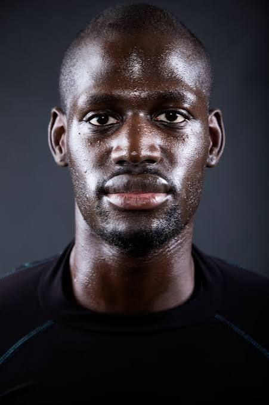

Amadi Diop
IA & Modèles LLM SovereignsCentre Africain de Recherche
SénégalFiltrer par thématique :
Centre Africain de Recherche
Sénégal
Bantu Capital
Côte d'Ivoire
Tech Security Labs
GhanaSahel Analytics
CamerounNaija Design Studio
NigeriaCarthage Data Systems
TunisieEquator Ventures
CongoSyli Design
GuinéeAtlas Cyber Academy
Maroc